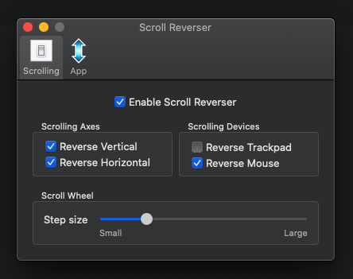

记录了本新人从 Windows 转向 Mac 的一些个人向配置，希望能早日「本当上手」！
系统相关
常用快捷键
- 截屏
全屏截图为Command + Shift + 3，区域截图为Command + Shift + 4。结果都被保存在 Desktop。再同时加上Control按键就可以把结果保存在剪贴板了。 - 锁屏
Windows 下的Alt + Ctrl + L，Mac 下可用Control + Command + Q - 打开 Explorer
Windows 下的Windows + E，Mac 下可用Option + Command + Space - 打开搜索
Windows 下的 Home 图标点击，Mac 下可用Command + Space
Dock
- 放大图标
System Preferences -> Magnification 可以在悬停的时候放大该图标。 - 自动隐藏
System Preferences -> Automatically hide and show 可以让整个任务栏在不悬停时隐藏。 - 双屏幕切换
想要在屏幕上下排列时把 dock 移动到上屏的底部而不是下屏的底部，在开着设置的时候把鼠标悬停在上屏的左/右下角即可，参考。 - 移动图标位置
有时候移动不成功，可能是因为移动的是 Dock 上的最近访问应用，而不是真正应用入口，去 System Preferences -> Show recent application in Dock 给关掉即可。
鼠标
外接鼠标的滚轮方向和 Windows 下相反，且鼠标滚轮和触摸板是联动的，可通过 scroll reverser 如下的设置来进行修改。

声音
外接显示器后需要去系统设置里设置一下声音输出才有声音。
应用相关
必备清单
记录下自己的应用配置清单，以备不时之需。
环境配置
- git
1
brew install git
- nvm
值得注意的是，需要确保 touch 几个文件(~/.bash_profile、~/.profile、~/.bashrc、~/.zshrc)，并向其中输入一些 load 命令，参考。1
curl -o- https://raw.githubusercontent.com/nvm-sh/nvm/v0.35.3/install.sh | bash
1
2
3
4
5给上面列到的几个文件都加上这几行
source ~/.nvm/nvm.sh
export NVM_DIR="$HOME/.nvm"
[ -s "$NVM_DIR/nvm.sh" ] && \. "$NVM_DIR/nvm.sh" # This loads nvm
[ -s "$NVM_DIR/bash_completion" ] && \. "$NVM_DIR/bash_completion" # This loads nvm bash_completion - npm
安装了 nvm 后直接使用nvm install xxx即可安装指定版本 node 及对应的 npm。 - whistle 及一系列插件
安装、进行 SwitchyOmega 配置、安装根证书，参考文章在内网。nohost 则要安装、进入 tde 插件配置 options 代理环境为 IMWeb，参考文章也在内网。1
2
3
4npm i -g whistle
w2 ti @tencent/whistle.tde
w2 install whistle.inspect
w2 install @tencent/whistle.nohost-settings - 其他我安装了的包
- @angular/cli
- @nestjs/cli
无需多言类
- Google Chrome
- Visual Studio Code
- JetBrains ToolBox
- Typora
- Google Drive
- Robo 3T
- Postman
- Sketch
- Adobe XD
- Xmind
- Steam
- 网易云音乐
- 企业微信
- 微信
- 微信开发者工具
- 腾讯会议
- 腾讯课堂(无 brew)
1 | brew install --cask google-chrome visual-studio-code jetbrains-toolbox typora google-drive robo-3t postman sketch adobe-creative-cloud xmind steam neteasemusic wechatwork wechat wechatwebdevtools tencent-meeting |
个人选择类
- Homebrew：apt-get！
- iTerm：美丽的命令行。
- Logi Options：配合 Logi 鼠标使用。(无 brew)
- CheatSheet：用来快速看各个应用快捷键的工具。
- HiddenBar：用来收起桌面右上角的图标。
- Stretchly：用来做定时提醒(喝水、久坐等)。
- ScrollReverser：用来反转外接鼠标时候的滚轮方向。
- Itsycal：用来在右上角展示日历全貌。
- Kap：方便且高清的录屏 + 转成 GIF 工具。
- KeyCastr：展示快捷键的工具，方便录制时候用。
- OpenInTerminal：快速用终端或任意应用(means vs code to me)打开文件夹的小工具，究极推荐。
- Snipaste：屏幕截图、取色工具，比系统快捷键截图还好用。
- Free Ruler：屏幕尺子，前端仔测量页面间距、长度、对齐等样式的必备工具。
1 | brew install --cask iterm2 cheatsheet hiddenbar stretchly scroll-reverser itsycal kap keycastr openinterminal snipaste free-ruler |
其他人推荐但我没有用过的
- Alfred
- ShiftIt
- BetterTouchTool
- Bob
我用的 VS Code 插件
- Atom One Dark Theme：一个美丽的主题配置。
- Bracket Pair Colorizer：🌈 彩虹括号。
- Color Highlight：对 CSS 中使用的颜色进行可视化展示。
- Document This：快速生成注释。
- ESLint
- Git Graph
- GitLens
- HTML Snippets
- Live Server
- MDX
- postcss-sugarss-language
- Prettier
- Remote - SSH
- SVG Viewer
- Tabnine
iTerm2 + Terminal 配置
想要使用 zsh + powerlevel9k 主题 + one dark 配色。
- 下载 iTerm
1
brew install --cask iterm2
- 下载 oh my zsh 并设置为默认 shell
1
2sh -c "$(curl -fsSL https://raw.githubusercontent.com/robbyrussell/oh-my-zsh/master/tools/install.sh)"
chsh -s /bin/zsh - 下载 powerlevel9k 并设置为默认 theme
1
2
3git clone https://github.com/bhilburn/powerlevel9k.git ~/.oh-my-zsh/custom/themes/powerlevel9k
vim ~/.zshrc
将默认的 ZSH_THEME="robbyrussell" 改成 ZSH_THEME="powerlevel9k/powerlevel9k" - 下载 powerline 字体以解决乱码问题
1
2
3git clone https://github.com/powerline/fonts.git
cd fonts
./install.sh - 下载 one dark 配色文件
地址在这儿。 - 设置字体
iTerm：Preferences -> Profiles -> Text -> Font 设置为 Roboto Mono for Powerline，其他可自行调整。记录下我的设置以备后用：字号 16、横向 100、纵向 107。
Terminal：Preferences -> Text -> Font 设置为 Roboto Mono for Powerline，其他可自行调整，只不过它字号从 14 就跳到 18 了，选择不多。 - 设置配色
iTerm：Preferences -> Profiles -> Colors -> 右下角 Import -> 导入刚下载的 One Dark.itermcolors -> 选择 One Dark。还可以在 Preferences -> Profiles -> Window 里设置透明度，有毛玻璃的效果。
Terminal：Preferences -> Profiles -> Text -> 手动取色设置 ANSI Colors。还可以在 Preferences -> Profiles -> Text -> Background 里设置透明度和背景模糊，我分别设置了 80% 和 20%。
参考：文章、powerlevel9k、one dark。
文本操作快捷键
shift + 左右箭头：向左/右选择一个字符
shift + 上下箭头：向上/下选择一行字符
option + 左右箭头：向左/右移动光标一个单词
option + 上下箭头：向上/下移动当前行位置
command + 左右箭头：移动光标到最左/右
command + 上下箭头：移动光标到最上/下
shift + option + 左右箭头：向左/右选择一个单词
shift + option + 上下箭头：复制该行，并将光标停留在上/下
shift + command + 左右箭头：选择该行中光标往左/右全部内容
shift + command + 上下箭头：选择整个文件中光标往左/右全部内容
option + command + 左右箭头：切换左/右 tab
option + command + 上下箭头：向上/下增加一个光标(连按则是多个光标)
Visual Studio Code 快捷键
- 前进
Control + Shift + - - 后退
Control + - - 选中当前鼠标所在词
Command + D - 格式化
Control + Shift + F - 打开 Setting.json
Command + , - 多个光标
Option + Click
Chrome 快捷键
- 打开 Tab
Command + T - 关闭 Tab
Command + W - 在 Tab 间进行切换
Option + Command + Arrow - 刷新
Command + R - 开发者工具
Control + Shift + I
常见问题
无法切换对话框焦点
- 问题
比如当我们Command + Delete删除东西的时候，系统会有个二次确认弹窗，想点确认却无法用Tab来切换光标，只能用鼠标。 - 解决
原因是 Mac 默认只能在文本框和列表区域才生效，需要去改一下配置。System Preference -> Keyboard -> Shortcuts -> 底部勾选下 Use keyboard navigation to move focus between controls 即可，参考。要注意的是，一般二次确认框有两个按钮，primary 样式的按钮通过按回车确认，default 样式的按钮则需要通过按空格才能确认。
应用不受信任
- 问题
安装 robo 3T 时弹出提示框，显示 robo 3t cannot be opened because the developer cannot be verified。 - 解决
$ sudo xattr -r -d com.apple.quarantine /Applications/Robo\ 3T.app，以后遇到其他应用没被授权时，同样可使用此方法，把应用名称改成相应的即可，参考。
下载 homebrew 过慢
- 问题
运行命令/bin/bash -c "$(curl -fsSL https://raw.githubusercontent.com/Homebrew/install/HEAD/install.sh)"，终端 hang 在了downloading command line tools for xcode。 - 解决
根据参考，就是这个 command line tools 下载过慢的问题，解决方法是要么等待，要么去申请一个 apple developer account，手动自己下载。